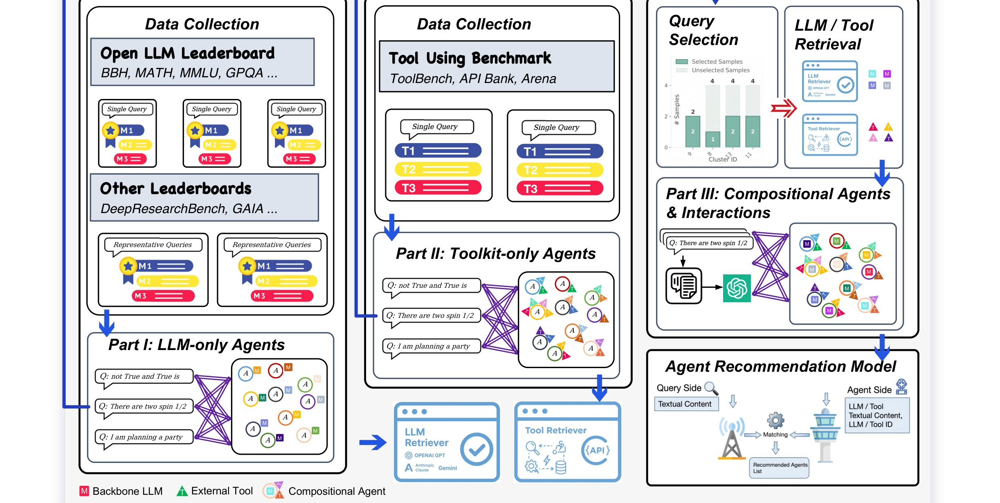
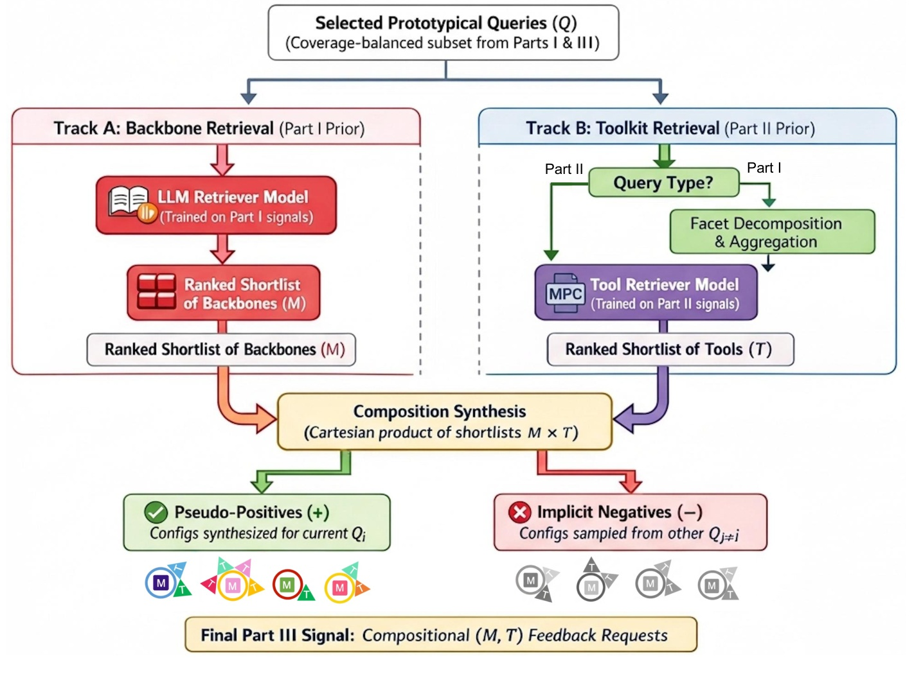
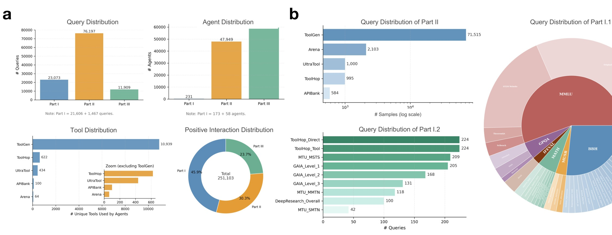
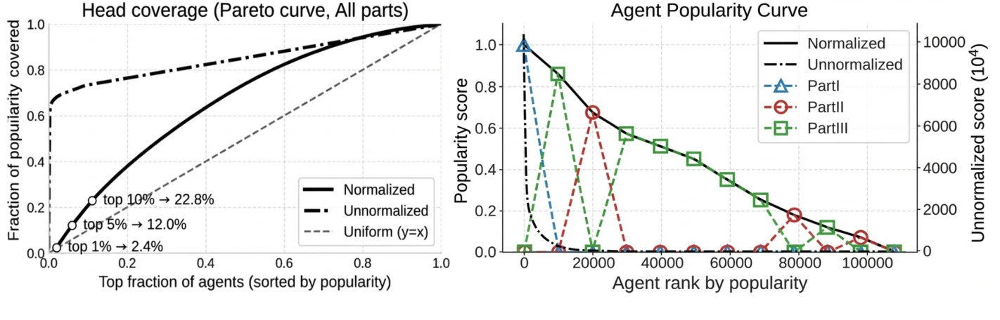
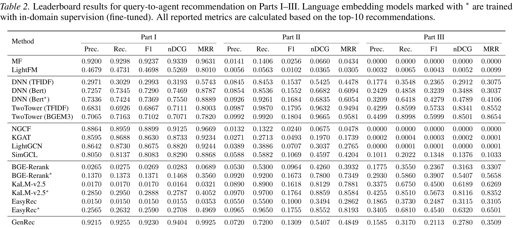
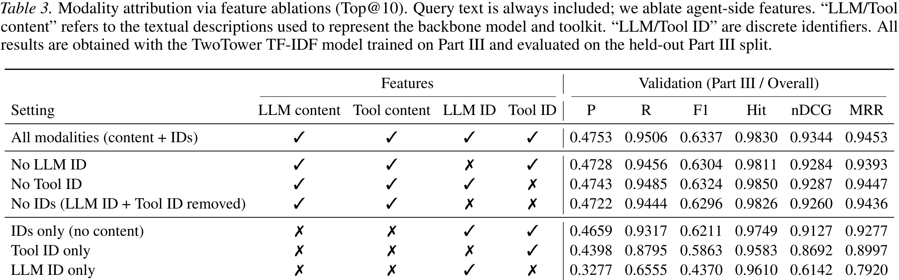
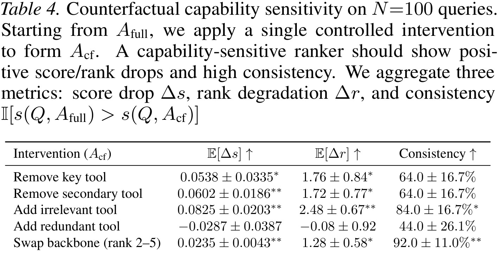
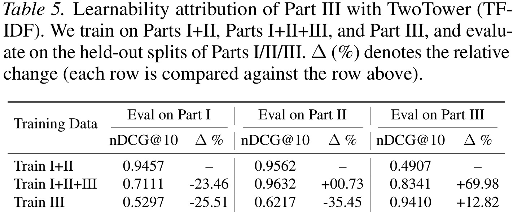
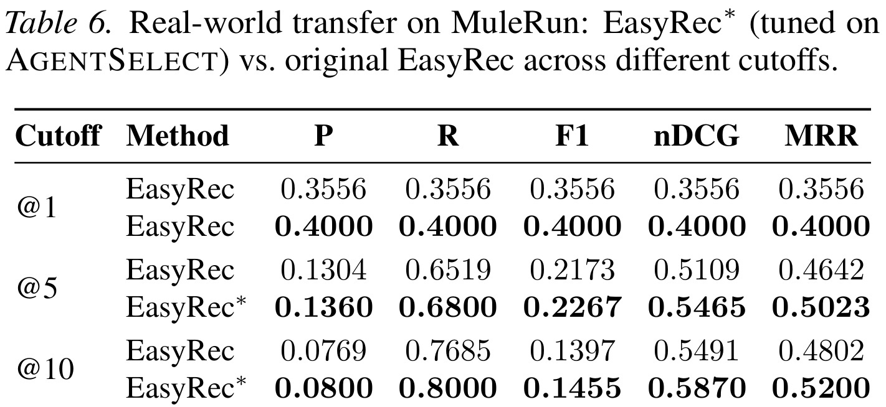

这篇 arXiv 论文《AgentSelect: Benchmark for Narrative Query-to-Agent Recommendation》来自 University of Technology Sydney，一作 Yunxiao Shi，合作机构包括 Rutgers University、University of New South Wales、University of Sydney 和 University of Queensland；论文入口是 arXiv:2603.03761。论文把“给定一个自然语言任务，应该选择哪个可部署 Agent 配置”正式改写成 query-to-agent recommendation，并发布 AGENTSELECT 这一统一基准：111,179 个叙述式 query、107,721 个 deployable agent、251,103 条正例交互。官方资源和项目页为 Ancientshi/AgentMatch，本笔记重点读它如何把 LLM leaderboard、工具调用 benchmark 和组合 Agent 合成监督统一成推荐学习问题。
1. 背景和问题
LLM Agent 生态正在从“少数工程团队手写固定工作流”走向“用户用自然语言即时创建或调用轻量 Agent”。这件事带来的第一个变化，是 Agent 不再只是一个模型接口，而是一个由 backbone LLM、工具集合、记忆策略、执行策略、权限和 glue code 共同组成的可部署配置。用户提出的 query 可能是“帮我分析一份财报”“查某个航班并填日程”“把数据表转成图表并写摘要”，系统真正需要决定的不是哪个模型在 MMLU 上分数更高，而是哪一个 agent configuration 最可能完成这个具体任务。
现有评测基础设施并不能直接回答这个问题。LLM leaderboard 通常评估模型在 MMLU、BBH、MATH、GPQA、GAIA 等任务上的 QA 能力；tool benchmark 则评估模型能否选择和调用 API、函数或 MCP 工具；agent leaderboard 会报告某些 agent 在复杂任务上的 end-to-end 分数。但这些结果大多停留在组件或 benchmark 级别：它们告诉我们“某个模型在某类题上强”“某个工具集能解决某类 API 调用”，却没有形成 query-conditioned supervision，也就是没有直接告诉推荐器“面对这个用户叙述请求，哪些完整 agent 配置是正例”。
这种缺口在 agent marketplace 场景中尤其明显。一个市场中可能有数百到数万个 agent，它们名字、描述、工具和模型能力各不相同；新 agent 又会持续加入，历史点击和调用日志非常稀疏。传统协同过滤依赖用户—物品共现，但这里没有稳定 user identity，用户意图几乎完全由当前 query 表达；更麻烦的是，大量 agent 配置可能只出现一次或几次，ID 复用信号很弱。论文因此把问题定义为 narrative query-to-agent recommendation：输入一个自由文本 query 和候选 agent catalog，输出 top-k agent 排序，使排序尽量匹配 query 所需能力。
这个问题和普通 LLM routing、tool retrieval 都有关，但并不等价。LLM routing 只决定 backbone model，目标通常是质量、成本和延迟权衡；tool retrieval 只决定工具集合，目标是从庞大工具库中找出相关 API；AgentSelect 关心的是完整 capability profile，也就是模型和工具组合在一起能否解决任务。论文用 $A=(M,T)$ 表示 agent 的能力核心，其中 $M$ 是 backbone LLM，$T$ 是工具集合。真实系统还需要运行策略 $C$，所以工程上每个 agent 会保存为 $(M,T,C)$ YAML；但为了公平、可复现和跨框架比较，benchmark 学习与评估主要围绕稳定的 $(M,T)$ 能力核心展开。
从推荐系统视角看，这篇论文重要在两点。第一，它把推荐对象从 item、文档、视频、商品扩展到了 Agent 配置；推荐结果一旦被点击或执行，就可能调用外部工具、写文件、发请求或修改状态，因此能力匹配和安全边界都比普通内容推荐更重。第二，它揭示了一个新的长尾监督形态：Part I 里模型 ID 复用较多，类似传统 head item；Part II/III 里工具组合和 agent 配置高度稀疏，很多候选接近 one-off。推荐器若只记 ID，会在长尾处失效；若能理解 query 和 agent capability description，就可能泛化到新模型、新工具和新组合。
还要注意，Agent 选择问题的难度不只来自候选数量，而来自候选对象的组合性和可执行性。普通内容推荐中，一个 item 通常是静态的；Agent 配置却可能由模型版本、工具版本、权限、运行环境和记忆状态共同决定，同名 Agent 在不同 runtime 下表现也可能不同。因此“推荐 Agent”不能简单套用文档检索的语义相似度：query 说“整理会议纪要”时，系统既要识别转写、摘要和日程写入等能力，也要确认工具是否有权限访问音频、文档和日历；query 说“分析实验日志”时，系统既要选择能读表和画图的工具，也要考虑模型是否擅长统计推断和异常解释。论文把这些复杂因素压缩到 capability profile，虽然是简化，但正是这种简化让问题可以被标准化评测。
从研究空白看，AgentSelect 试图补上的不是“又一个 Agent 能力榜”，而是“榜单结果如何被复用为推荐监督”。已有 benchmark 的价值通常在诊断：告诉开发者某个模型或工具哪里强、哪里弱；但对于用户侧系统，更需要 prescriptive signal，即面对某个任务应该选谁。把诊断结果转成推荐正例，是论文最有意思的范式转换。它意味着未来每次模型、工具或 Agent 评测都不只是写报告，还可以进入一个持续更新的 Agent selection data lake，服务后续自动路由、市场搜索和零代码工作流组装。
2. 方法
2.1 任务定义：把 Agent 选择写成 top-k 推荐
论文首先明确输入和输出。给定自然语言 query $Q$ 和候选 agent catalog $A={A_1,\ldots,A_n}$，推荐器需要为每个 agent 估计 utility score $s(Q,A)$，再返回 top-k 排序：
符号解释：$Q$ 是用户当前的叙述式任务请求，$A$ 是一个候选 Agent 配置，$\mathcal{A}(Q)$ 是推理时可召回或可排序的候选集合，$s(Q,A)$ 是模型估计的匹配效用，$\hat{R}_k(Q)$ 是最终推荐的前 $k$ 个 Agent。这里没有持久用户历史，用户偏好和任务意图都被压进当前 query，因此更接近 session-level recommendation 或 intent-aware retrieval，而不是长期 user-item 协同过滤。
为了让推荐对象不是抽象标签，论文定义 capability profile：
符号解释：$M$ 是 backbone language model，$\mathcal{M}$ 是模型集合；$T$ 是该 Agent 可调用工具集合，$\mathcal{T}$ 是工具全集。真实部署时还会有 $C$，包括 system prompt、memory、temperature、session history、tool-call policy、knowledge base 等配置。论文保留 $(M,T,C)$ YAML 使每个 agent 可执行，但 benchmark 主要比较 $(M,T)$，因为 $C$ 跨框架差异大且很多来源缺失，难以标准化。
这个抽象非常务实。模型决定语言理解、推理、规划和通用能力；工具决定 Agent 能否访问搜索、代码执行、数据库、日程、API 或领域系统。一个 query 对模型和工具的需求往往同时存在：例如“分析 CSV 并生成可视化”需要代码/表格工具，也需要模型理解数据分析目标；“查询法规并解释案例”需要检索工具，也需要法律文本推理。只推荐模型或只推荐工具都不够，推荐完整 $(M,T)$ 才贴近真实 Agent 选择。
这个 top-k 形式还有一个隐含约束：候选集 $\mathcal{A}(Q)$ 可以小于完整市场全集。真实系统通常会先用召回器根据 query 语义、工具权限、组织策略和可用区域筛掉一大批候选，再让精排模型估计 $s(Q,A)$。因此 AGENTSELECT 的任务定义既可以用于单阶段 retrieval，也可以用于“召回—粗排—精排—安全过滤”的多阶段架构。论文没有强制某一种工业实现，而是提供一个共同评价面：只要最终输出 top-k agent，就能用 Precision、Recall、nDCG 和 MRR 衡量推荐质量。

Figure 1 给出整篇论文的总览。左侧是 LLM-only 来源，例如 Open LLM Leaderboard、BBH、MATH、MMLU、GPQA 和 DeepResearchBench；中间是 toolkit-only 来源，例如 ToolBench、APIBank、Arena 等工具调用数据；右侧是 compositional agents and interactions，也就是把模型和工具组合成真实 deployable agent 后产生的交互监督。最终这些数据共同训练 Agent Recommendation Model。关键点是，论文没有把 Agent 推荐当成纯文本检索，而是把异构评测结果系统性转写成统一的 query-agent interaction，因此它更像推荐系统基础设施，而不是又一个榜单。
2.2 Capability profile 与可执行 YAML
论文强调每个候选必须是 deployable problem-solver，而不是 benchmark 标签。它将 Agent 表示为 YAML 配置，字段包括 Backbone LLM、Toolkit 和 Configuration。Backbone LLM 描述模型名称、上下文窗口、发布信息和能力摘要；Toolkit 列出工具名称和描述；Configuration 记录会话历史、记忆管理、知识库等运行元数据。这样做的好处是，推荐结果可以直接被框架加载，映射到 Agno、AutoGen、LangChain 或 LangGraph 等 runtime。
这里需要区分“可部署表示”和“公平评估核心”。如果把所有 $C$ 都纳入 benchmark，评估会被框架实现、prompt 模板、memory 细节和权限策略强烈影响；但如果只保留 $M$，又会退化成 LLM routing；如果只保留 $T$，又会退化成 tool retrieval。论文选择 $(M,T)$ 作为最小稳定核心，是为了让不同来源的评测结果可以对齐：模型 benchmark 可以贡献 $M$ 维度监督，工具 benchmark 可以贡献 $T$ 维度监督，组合合成则补上 $(M,T)$ 端到端配置。
这种 schema 对未来 agent marketplace 很关键。市场里一个 Agent 的名称可能很营销化，描述也可能不完整；真正用于推荐的应该是结构化能力画像：它能调用哪些工具，工具解决什么子任务，backbone 在相关任务族上表现怎样，是否支持长上下文、代码、视觉、搜索或复杂规划。AgentSelect 的 YAML 设计相当于把这些能力转成可学习 item content feature，使推荐器可以在新 agent 冷启动时基于文本和结构信息做匹配。
同时，YAML 表示也让数据集具备“可执行闭环”的潜力。很多推荐数据集只保存 item ID 和文本描述，即使推荐器选出 item，也无法验证它是否真的能完成 query；AgentSelect 至少要求候选能映射到 runtime 中的模型与工具组合。这样的设计方便后续加入 execution-based feedback：推荐器先给出 $(M,T)$，runtime 加载对应配置并执行任务，再把执行成功率、工具调用错误、成本和安全拦截作为新的训练信号。换句话说，$(M,T,C)$ 不是装饰性字段，而是把离线推荐 benchmark 连接到在线 Agent 系统的桥。
论文选择不把 $C$ 作为主要评测变量，也是一种边界控制。不同 Agent 框架的 memory、prompt、tool middleware 和 permission model 差异很大，如果把这些全部纳入 benchmark，很难判断一个方法提升来自能力匹配，还是来自某个框架 glue code。先把稳定的 $M$ 与 $T$ 学清楚，再在具体平台上叠加 $C$ 的策略优化，更符合分层系统设计。
2.3 Part I：从 LLM-only benchmark 转成模型选择监督
AGENTSELECT 的 Part I 处理 LLM-only agents，也就是没有外部工具时，query 应该匹配哪些 backbone LLM。论文使用两类来源。第一类是 query-granular evaluation results，例如 Open LLM Leaderboard 中每个 query 上不同模型的表现。论文把每个 query 的 top-10 模型视作正例，形成 query-model interaction。为了保证稳定性，它从 4,426 个 LLM 中筛出官方发布、机构可信的 173 个模型，减少噪声和不可部署候选。
第二类是 dataset-granular evaluation results。很多 benchmark 只有“某模型在某数据集上的总分”，没有每个 query 的细粒度成绩。论文把这类 aggregate score 当成 task-level prior：先从数据集中选出语义覆盖均衡的 coreset queries，再把该数据集的模型排序赋给这些代表 query。这里的监督较弱，因为同一数据集内不同 query 可能偏好不同模型；但它能把大量只有汇总分的评测转成统一 query-agent interaction 格式。
这个设计本质上是在做 weak supervision。它承认 leaderboard 的原始形态并不适合训练推荐器，但仍能提供“任务族—模型能力”的先验。比如数学题倾向数学强模型，多跳问答倾向检索/推理强模型，长文本任务倾向长上下文模型。Part I 的问题是 agent catalog 很小且复用很密，容易让 CF/GNN 记住头部模型；但它也提供了模型能力的基础信号，是后续组合 Agent 的一半来源。
Part I 的另一个作用是给组合配置提供可解释的模型侧标签。若一个 query 来自数学、代码、长上下文或多跳推理任务，benchmark 分数可以提示哪些 backbone 更可能胜任；当这些 backbone 后续和工具组合时，推荐器不需要从零学习“哪个模型适合哪类意图”。这和普通推荐里用预训练内容向量做冷启动类似，只不过这里的内容先验来自评测成绩而不是 item 文案。
2.4 Part II：从工具 benchmark 转成 toolkit-only 监督
Part II 处理 toolkit-only agents。工具调用 benchmark 通常会给出某个 query 所需工具，或者记录成功轨迹中实际调用的工具。论文把这些信号转成 backbone-agnostic candidates：对每个 query，设置 backbone 为 null placeholder，把 benchmark 提供或轨迹推断出的工具集作为 $T$，构成 toolkit-only agent。这个 agent 是 query 的正例。
这样做的意义是把“工具充分性”从“模型会不会调用”中分离出来。很多 tool benchmark 关注的是模型是否能选择 API，但对 Agent 推荐来说，第一步更基本的问题是：这个任务需要什么工具集合？例如家谱关系任务需要 family relation finder、genealogy query 和 name extraction；数据表任务需要 spreadsheet 或 code execution；网页任务需要 browser/search。Part II 将这些需求转成工具集合监督，使推荐器学习 query 中的能力需求词和工具描述之间的匹配。
Part II 也使长尾问题变得明显。工具空间非常大，组合更大，很多工具集只出现一次或少数几次。传统 collaborative filtering 依赖重复 item，这里会非常脆弱；相反，content-aware matching 能读工具描述、参数语义和 query 需求，因此更适合。论文后续实验显示，tool identity 和 tool content 对结果贡献都很大，甚至工具 ID 比模型 ID 更有信息，这也符合 Agent 场景：很多任务能否完成首先取决于有没有正确工具。
不过 Part II 的 toolkit-only 设计也有一个现实限制：工具是否“足够”通常取决于调用顺序、参数填充和异常恢复，而不仅是工具集合本身。两个 Agent 可能拥有同样的搜索和代码工具，一个能规划多步调用，一个只能单次函数调用；在 $(M,T)$ 抽象里它们会很接近。因此 Part II 更适合作为能力召回监督，而不是最终执行成功的完整标签。论文后续用 Part III 和外部部署验证补这一层，但真实系统仍需要 trace-level feedback。
2.5 Part III：合成组合 Agent 与伪正例交互
Part I 和 Part II 各自只覆盖一半能力：模型或工具。真实 agent selection 需要 $(M,T)$ 组合监督，但公开数据里这种端到端交互稀缺。因此论文构造 Part III：先从 Parts I/II 中选出 coverage-balanced prototypical queries，再训练轻量 LLM retriever 和 tool retriever，为每个 query 分别召回 backbone shortlist 和 tool shortlist，最后组合成若干 $(M,T)$ agent configurations。

Figure 2 展示了 Part III 的合成管线。对一个 query，系统先从已有模型选择和工具选择信号中检索可能适配的 $M$ 和 $T$；对于 Part I query，还会把 query 拆成多个 facets，以便挖出细粒度工具需求；随后把模型候选和工具候选组合成 query-specific candidate pool。论文将为当前 query 合成的配置视为 pseudo-positive，而其他 query 的配置在当前 query 下视作 unlabeled/negative，遵循 implicit-feedback recommender 的常见假设。
这里的关键不是“伪造用户点击”，而是把已有评测证据组合成 capability-complete supervision。假设某 query 需要强数学推理模型和代码/计算工具，那么从模型 benchmark 能知道哪些 $M$ 更合适，从工具 benchmark 能知道哪些 $T$ 更相关；组合后得到的 $(M,T)$ 虽然不是人工真实点击，但满足该 query 的能力需求，因此可以作为正例训练 Agent 推荐器。论文后续用 learnability、counterfactual edits 和 MuleRun transfer 验证这些 pseudo-positives 不是纯噪声。
当然，Part III 的假设有边界。合成配置只保证模型和工具在语义上匹配 query，不保证运行时 prompt、工具权限、参数 schema 和错误恢复都正确；把其他 query 的配置当负例也可能误伤通用 Agent。论文用 positive-only implicit feedback 的语言来降低这个风险：未观察项不是绝对负例，而是在训练中作为较低相关或采样负例处理。工程使用时仍需要用执行日志和人工反馈继续校准。
2.6 训练和评估接口：为什么内容匹配比 ID 记忆更重要
AGENTSELECT 的统一特征包括 query content、model content、tool content、model ID 和 tool ID。不同方法可以使用不同组合：MF、LightFM、NGCF、KGAT、LightGCN、SimGCL 等依赖交互图和 ID；DNN/TwoTower、BGE-Rerank、KaLM、EasyRec 等更强调文本匹配；OneRec 则代表生成式推荐。论文在 Part I/II/III 上分别报告 Precision@10、Recall@10、F1@10、nDCG@10 和 MRR@10。
因为 test query 没有历史 query ID，论文对需要 query-ID embedding 的方法使用 TF-IDF 最近邻 surrogate：找训练集中 $N=3$ 个最相似 query，平均它们的 query-ID embedding。这是一个必要但不完美的补丁，也体现了 AgentSelect 和传统推荐的差异：传统推荐里 user ID 常常存在，query-to-agent 推荐里 query ID 是一次性的。若模型强依赖 ID，它在真实新 query 上会失去锚点。
从目标函数角度，可以把它理解为 positive-only implicit ranking。观察到的 query-agent pair 是正例，未观察 pair 通常通过采样或全 catalog 排序作为负/未标注项，训练目标让 $s(Q,A^+)$ 高于 $s(Q,A^-)$。论文没有把某个单一损失作为贡献重点，而是强调数据接口：只要所有来源都转成 query、agent profile、positive interaction，就能训练多种推荐模型，并用统一 top-k 指标比较。
这种接口对可扩展性很重要。新 leaderboard 出现时，可以把模型结果转成 Part I；新 tool benchmark 出现时，可以转成 Part II；真实 marketplace 有点击或执行成功日志时，可以直接加入组合监督；新工具或模型冷启动时，可以凭内容描述进入候选集。AgentSelect 因此更像一个持续扩展的数据标准，而不是一次性的静态榜单。
如果把这一接口落到系统实现，最自然的是双塔或多塔结构：query encoder 编码用户叙述，agent encoder 分别编码 model description、tool descriptions 和必要的 ID/history feature，最后用点积、MLP 或 reranker 估计 $s(Q,A)$。对于超大 catalog，可以先用向量召回快速取候选，再用 cross-encoder 或 LLM-based judge 重排少量高风险任务。论文比较多类 baseline 的意义就在这里：它不是绑定某个模型，而是证明在同一数据接口下，内容增强模型相对 ID 模型更适合长尾组合配置。
3. 实验结果
3.1 Benchmark 规模、稀疏性和长尾形态
AGENTSELECT 总体包含 111,179 个 narrative queries、107,721 个 deployable agents 和 251,103 条 positive query-agent interactions。Part I 有 23,073 个 queries、231 个 agents，正例占 45.9%；Part II 有 76,197 个 queries、47,949 个 agents，正例占 30.3%；Part III 有 11,909 个 queries、59,541 个 agents，正例占 23.7%。工具全集包含 12,099 个 unique tools，其中 ToolGen 贡献最大，达到 10,939 个工具。

Figure 3 的价值是把这三部分的分布差异可视化。Part I 的 agent 数量小，模型复用密集，像传统推荐里的 head item；Part II/III 的 agent catalog 大得多，正例更稀疏，组合空间更接近真实 marketplace。这个结构决定了不同方法的优势：ID 记忆和图传播在 Part I 会很强，因为 co-occurrence 足够；但到了 Part II/III，很多 agent 近似 one-off，模型必须依赖 query 和 capability profile 的内容理解。
从数据工程角度看，这个 benchmark 也揭示了 agent 生态的可扩展性挑战。107,721 个 deployable agents 听起来很多，但如果真实平台允许用户动态组合模型、工具和策略，组合数还会指数增长。一个可用推荐器不能要求每个组合都有大量点击，而要能从模型描述、工具描述、历史 benchmark 证据和少量交互中泛化。AGENTSELECT 正是在这个稀疏长尾环境下测试推荐器。
3.2 Regime shift：从 dense head reuse 到 near one-off supervision
论文用 Figure 4 说明 agent popularity 的两种定义。Unnormalized popularity 按 agent ID 复用计数，明显被 Part I 头部模型支配；Normalized popularity 则从 LLM 和 tool component 派生，并归一化到 $[0,1]$，能缓解 near-unique agent ID 造成的假长尾。结果显示 normalized 后头部仍然存在，但远没有 ID 计数那么尖锐：top 1%/5%/10% agents 只解释 2.4%/12.0%/22.8% 的 content-based popularity mass。

这张图是理解结果的关键。传统 CF/GNN 依赖“相似用户选择相似 item”或“相似 query 连接相似 agent”的图结构；当 agent ID 很少复用时，图邻居会坍缩，模型很难从交互传播中学到稳定偏好。内容匹配则不需要每个 ID 被反复点击，它可以看到两个 agent 都有搜索工具、代码工具或长上下文模型，也可以看到 query 里有“spreadsheet”“family relation”“legal search”等能力提示。
这也是 AgentSelect 相对普通工具检索的新增价值：它不仅说内容重要，还用三部分数据展示了何时内容变得必需。Part I 是 dense head reuse，ID 方法能占优势；Part II/III 是 long-tail near one-off，content-aware matching 成为主导。真实 agent marketplace 更像后者，因为新 agent、新工具、新组合会不断出现，历史 ID 统计永远滞后。
3.3 Leaderboard：不同推荐模型家族的表现
Table 2 汇总了 Parts I–III 的推荐结果。整体趋势非常清楚：MF、NGCF、LightGCN 等 ID/图方法在 Part I 表现很强，例如 MF 在 Part I 上 Precision@10 达到 0.9200、nDCG@10 0.9339、MRR@10 0.9631；但在 Part II 和 Part III 上迅速失效，MF 在 Part III 全部为 0。LightFM、KGAT、SimGCL 虽有一定缓解，但仍难以稳定覆盖组合长尾。

内容模型在 Part II/III 明显更稳。TwoTower TF-IDF 在 Part II 上 Precision@10 0.0987、Recall@10 0.9870、nDCG@10 0.9632；在 Part III 上 Precision@10 0.4299、Recall@10 0.8599、nDCG@10 0.8341。TwoTower BGEM3 进一步提升到 Part III Precision@10 0.4499、Recall@10 0.8998、nDCG@10 0.8501、MRR@10 0.8654。KaLM-v2.5 和 EasyRec 在 in-domain tuning 后也显著改善，说明 generic embedding 需要 benchmark-specific alignment 才能分辨细粒度 agent configuration。
这组结果支持论文的核心判断：Agent 推荐不是纯 popularity problem，而是 intent-to-capability matching。Part I 仍然保留很多传统推荐的头部复用，因此 MF/NGCF 很强；但一旦进入工具和组合配置，query 文本、模型描述和工具描述成为泛化主力。对业务系统来说，这意味着不能只等点击日志积累，也不能只维护人工标签；更现实的路径是把 Agent 配置写成高质量结构化描述，并用 content-aware ranker 做冷启动，再用真实执行反馈持续修正。
3.4 模态归因：ID 不是全部，工具和文本内容更关键
论文担心一个问题：如果推荐器只是记住热门 ID，那么 benchmark 不能证明 capability matching。Table 3 用 Part III validation 做模态消融：query text 固定保留，逐步移除 LLM content、tool content、LLM ID 和 tool ID。All modalities 的 nDCG 为 0.9344、MRR 为 0.9453；移除 LLM ID 后 nDCG 仍为 0.9284；移除 Tool ID 后 nDCG 为 0.9287；同时移除两个 ID 后 nDCG 仍有 0.9260。

这个结果说明模型不是主要靠离散 ID lookup。只保留内容仍然强，意味着 agent capability description 能承载大量匹配信号。反过来，IDs only 虽然也不差，nDCG 为 0.9127，但低于完整设置；Tool ID only 的 nDCG 为 0.8692，LLM ID only 只有 0.6142。工具身份比模型身份更有信息，符合工具密集任务的直觉：很多 query 首先要求“会不会做某类外部动作”，而 backbone 选择虽然影响质量，但单独模型 ID 不足以决定任务是否可执行。
这对建设 agent catalog 有直接启发。平台应该强制每个工具和 Agent 提供机器可读描述，包括功能、输入输出、权限、限制和典型任务；否则 content-aware ranker 没有足够信号，只能退化成 ID 统计。与此同时，ID 也不是没用：已有工具和模型的历史表现仍能补充稳定性、成本和可靠性信号。最合理的系统是内容与 ID 混合：新 agent 冷启动靠内容，成熟 agent 排序再引入历史成功率、成本和用户反馈。
3.5 伪正例验证：counterfactual sensitivity 与 Part III learnability
Part III 是合成监督，因此必须证明它不是无意义噪声。论文先做 counterfactual capability edits：从完整 agent $A_{full}$ 出发，构造反事实 agent $A_{cf}$，例如移除 key tool、移除 secondary tool、添加 irrelevant tool、添加 redundant tool、把 backbone 换成排名 2–5 的候选。能力敏感的 ranker 应该让 $s(Q,A_{full})$ 高于 $s(Q,A_{cf})$，并表现出正向 score drop $\Delta s$、rank degradation $\Delta r$ 和 consistency。

Table 4 显示，移除 key tool 的平均分数下降为 0.0538，排名退化 1.76；添加 irrelevant tool 的分数下降 0.0825，排名退化 2.48，一致性 84%；swap backbone 的一致性达到 92%。添加 redundant tool 则没有显著正向下降，甚至均值略负，说明模型没有简单惩罚所有工具变化，而是更敏感于能力破坏或无关噪声。这组行为验证支持一个判断：Part III 学到的不是随机组合偏好，而是对工具必要性、工具干扰和 backbone 适配有一定响应。 这张表的读法要比普通指标表更接近 causal probe：作者不是只看推荐器是否命中一个标签，而是主动修改 Agent 的能力剖面，观察分数和排名是否朝符合常识的方向移动。移除关键工具和替换较弱 backbone 都应该让 $A_{cf}$ 变差；添加无关工具会增加噪声和潜在误调用，也应该被惩罚；添加冗余工具不一定破坏能力，因此模型不显著惩罚它反而是合理现象。换句话说，Table 4 检查的是推荐器是否理解“能力变化”，而不只是复现训练集分布。对合成伪正例而言，这类反事实测试尤其必要，因为它能揭示监督信号是否学成了结构化能力偏好。

Table 5 从 learnability 角度验证 Part III。只用 Parts I+II 训练时，在 Part III 上 nDCG@10 只有 0.4907；加入 Part III 后提升到 0.8341，相对增长 69.98%；只用 Part III 训练，在 Part III 上甚至达到 0.9410。这个结果说明组合监督包含 I/II 没有的结构，不只是把模型和工具信号机械拼接。值得注意的是，加入 Part III 会降低 Part I 表现，这并不一定是错误标签，而是监督 regime 发生变化：Part I 更像 dense model reuse，Part III 更强调 compositional capability matching。一个实际系统可能需要多任务训练或按场景路由不同 ranker。
3.6 外部验证：MuleRun marketplace 与部署执行
论文还做了 real-world transfer。MuleRun 是一个公开 agent marketplace，包含 100+ task-oriented agents。作者采样一部分 agent，把每个 agent 描述对齐到 toolkit-only schema，并固定 backbone 为 GPT-5；然后为每个具体 agent 编写 20 个自然语言请求，把目标 agent 作为 labeled recommendation。EasyRec 在 AGENTSELECT 上 fine-tune 后，相比原始 EasyRec 在 Top@1/5/10 和 nDCG/MRR 上都有提升。

Table 6 中，EasyRec* 在 @1 的 Precision/Recall/F1/nDCG/MRR 从 0.3556 提升到 0.4000；@5 的 nDCG 从 0.5109 提升到 0.5465，MRR 从 0.4642 提升到 0.5023；@10 的 nDCG 从 0.5491 提升到 0.5870，MRR 从 0.4802 提升到 0.5200。幅度不算夸张，但方向一致，说明 AGENTSELECT 的监督能迁移到未见过的真实 agent catalog。
论文附录还用 Agno 和 MIRRORAPI 做 end-to-end deployed agent performance validation：从 TwoTower 推荐结果中采样候选，执行真实 shortlist，并用 LLM judge 标注最终任务表现，比较 recommender ordering 与 E2E-LABEL 的 rank alignment。虽然这部分在正文只是简述，但它很重要，因为 Agent 推荐最终不能只停留在文本相似度；一个 agent 描述匹配 query，不等于运行时工具调用、权限、错误恢复和输出质量都可靠。AGENTSELECT 目前给出的是 benchmark 和初步外部验证，后续真实平台仍需要把 execution success、latency、cost、safety incident 等信号纳入闭环。
3.7 结果的可信度边界
这篇论文的证据链相对完整：先定义任务，再构造统一数据，再用多类推荐模型验证长尾和内容匹配，再用消融、反事实和外部 marketplace 验证 Part III 的有效性。它最强的结论是：在 agent selection 这种长尾组合空间里，content-aware capability matching 比单纯 ID 协同过滤更稳；并且从异构评测 artifacts 中转写出的正例监督可以训练出有迁移性的 ranker。
但也有几个边界。第一，Part III 的 pseudo-positive 本质上仍是合成监督，它验证了 learnability 和 counterfactual sensitivity，但不等同于大规模真实用户选择。第二，benchmark 以正例为主，未观察项被当作负/低相关项时会引入噪声，尤其通用 agent 可能对多个 query 都可用。第三，真实 agent 选择还需要考虑成本、延迟、权限、安全和服务稳定性，论文主要围绕 capability utility，没有完整建模安全策略。第四，MuleRun 外部验证规模有限，且固定 GPT-5 backbone 的对齐方式会简化真实 marketplace 中模型差异。
4. 总结
4.1 我的判断
AgentSelect 的价值不在于某个推荐模型打榜，而在于它把一个正在快速出现的产品问题定义成了可训练、可评估的数据问题。过去我们通常把 Agent 能力评估拆开看：模型能力看 leaderboard，工具能力看 tool benchmark，复杂任务看 agent benchmark。真实用户却不关心这些拆分，他只想知道“我这个任务应该用哪个 Agent”。AGENTSELECT 把这些碎片统一成 query-to-agent recommendation，是 agent marketplace、零代码 agent 创建和自适应 agent routing 都需要的底层接口。
我认为它最重要的洞察是长尾 regime shift。Agent 配置空间增长太快，绝大多数组合不会有足够历史点击；如果系统等待协同过滤信号成熟，就永远追不上新工具和新模型。内容理解、结构化 capability profile、合成监督和真实执行反馈混合，才是更现实的路径。论文用 Part I/II/III 的结果把这件事讲得很清楚：ID 方法在 dense head reuse 下强，但到了 near one-off configuration，文本和工具能力描述成为核心。
4.2 工程启发与复现建议
如果要在实际平台借鉴 AgentSelect，我建议从 catalog schema 做起，而不是先训练复杂模型。每个 Agent 至少要有结构化字段：backbone、工具列表、工具描述、输入输出 schema、权限、成本、延迟、失败模式、典型 query、禁用场景和历史成功率。没有这些字段，推荐器只能读营销文案，无法做可靠 capability matching。
第二步是分层召回与排序。可以先做 query-to-tool retrieval 和 query-to-model routing，得到候选 $M$ 与 $T$；再组合成少量 $(M,T)$ 候选，用 TwoTower/BGE/KaLM/EasyRec 类 ranker 排序；最后用规则或执行模拟过滤权限、安全、成本和不可用工具。这样比直接在全组合空间暴力排序更可控，也更接近论文 Part III 的构造逻辑。
第三步是把执行结果回流。真实平台应记录 query、推荐 agent、用户是否选择、工具调用是否成功、任务是否完成、耗时、失败错误、安全拦截和用户追问。AGENTSELECT 解决的是冷启动和统一监督，真实系统还需要 online learning 或周期性重训来校准合成监督偏差。尤其对高风险工具，排序分数不能只代表“能力匹配”，还要叠加 permissioning 和 policy controls。
4.3 局限与后续跟进
这篇论文的局限主要有四点。第一，合成 pseudo-positive 仍可能高估组合 Agent 的真实可执行性，因为工具 glue code、认证、参数 schema 和异常恢复没有完全体现在 $(M,T)$。第二，正例-only benchmark 对负例定义较弱，可能把“未观测但可用”的 agent 当成低相关。第三，论文强调 capability matching，但真实推荐还要同时优化 cost、latency、privacy、safety 和用户信任。第四，外部验证规模和 marketplace 覆盖仍有限，距离生产级 agent store 的在线 A/B 还有距离。
后续我会重点关注三件事。第一，项目仓库是否释放完整数据、YAML schema、训练脚本和 MuleRun/Agno 复现实验，尤其是 Part III 合成细节。第二，是否有后续工作把 execution traces、tool permission 和 safety constraints 加进 agent recommendation。第三，能否把 AgentSelect 和现有 LLM routing、tool retrieval、RAG tool serving、MCP marketplace 结合，形成一个真正可上线的 agent selection stack。
总的来说，AgentSelect 是一篇很适合作为 Agent 生态基础设施入口阅读的论文。它把“选择 Agent”从人工经验、榜单查阅和关键词搜索，推进到可学习的推荐问题；即使最终不直接使用它的数据集，它关于 capability profile、正例-only 交互、长尾组合空间和内容匹配的建模方式，也很值得所有做 Agent 平台、工具市场和自动化工作流的人参考。